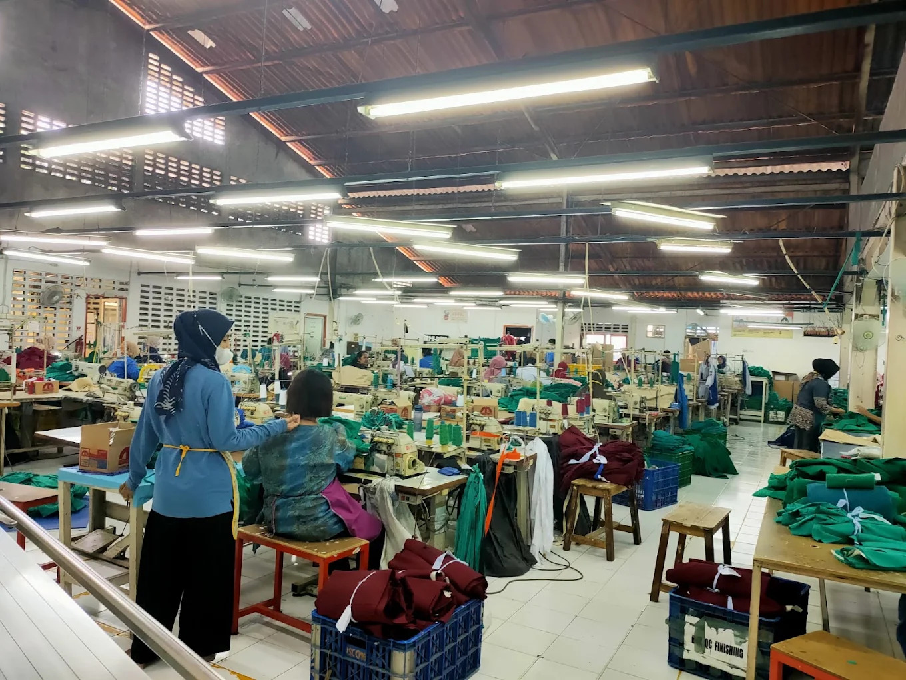

Visi Kami
PT. Lestari Dini Tunggul menjadi pemimpin pasar untuk produk Hospital linen dan Industrial apparel di Indonesia.
PT Lestari Dini Tunggul berkembang dari linen rumah sakit menuju medical dan industrial apparel dengan menghadirkan produk yang nyaman, fungsional, dan profesional.

Perjalanan PT Lestari Dini Tunggul bermula pada tahun 1982 dari usaha yang sederhana dan berkembang melalui produksi linen rumah sakit. Seiring meningkatnya kebutuhan pelanggan, kapabilitas perusahaan diperluas ke pakaian medis, seragam kerja, dan industrial apparel untuk berbagai lingkungan profesional. Inovasi dan kreativitas menjadi dorongan untuk terus mengembangkan produk, sementara kualitas pengerjaan, kenyamanan, serta desain yang ergonomis menjadi pertimbangan penting dalam setiap solusi yang ditawarkan.
PT. Lestari Dini Tunggul menjadi pemimpin pasar untuk produk Hospital linen dan Industrial apparel di Indonesia.
Selalu memberikan produk-produk garmen yang berkualitas dan kompetitif bagi pelanggan. Menggunkan daya kreatifitas dan inovasi untuk tumbuh dan berkembang.
Memadukan pengalaman puluhan tahun, material berstandar mutu, dan kapasitas operasional yang andal untuk memberikan pengalaman terbaik dan rasa aman bagi pengguna medis maupun industri.
Penggunaan material berstandar tinggi selalu dibarengi dengan peningkatan kualitas pengerjaan yang berkesinambungan. Hal ini memastikan setiap produk yang Anda terima awet, bermutu tinggi, dan memenuhi standar sertifikasi TKDN
Didukung oleh kapasitas pengetahuan dan operasional yang mumpuni, kami mampu merespons dan melayani secara cepat, mulai dari tahap perencanaan produk, penyesuaian desain, hingga penyusunan anggaran (budgeting) yang efisien.
Kreativitas menjadi fondasi kami dalam mengembangkan produk. Kami mengaplikasikan teknologi material yang relevan dengan lingkungan kerja profesional, seperti fitur Soil Release, Water Repellent, dan pelapis Antibakteri.
Berbekal pengalaman sejak 1982, produk kami telah digunakan oleh berbagai rumah sakit dari Papua hingga Aceh. Kami memahami betul bagaimana merancang pakaian yang ergonomis demi kenyamanan, keamanan, sekaligus meningkatkan citra instansi Anda.
Kapabilitas perusahaan mencakup pengembangan produk, pemilihan material, konstruksi pakaian, kustomisasi identitas, serta pengendalian kualitas untuk kebutuhan institusi dan perusahaan.
Sampaikan fungsi penggunaan, spesifikasi, jumlah, dan identitas yang dibutuhkan. Tim kami siap membantu mengarahkan pilihan produk dan konfigurasi yang sesuai.